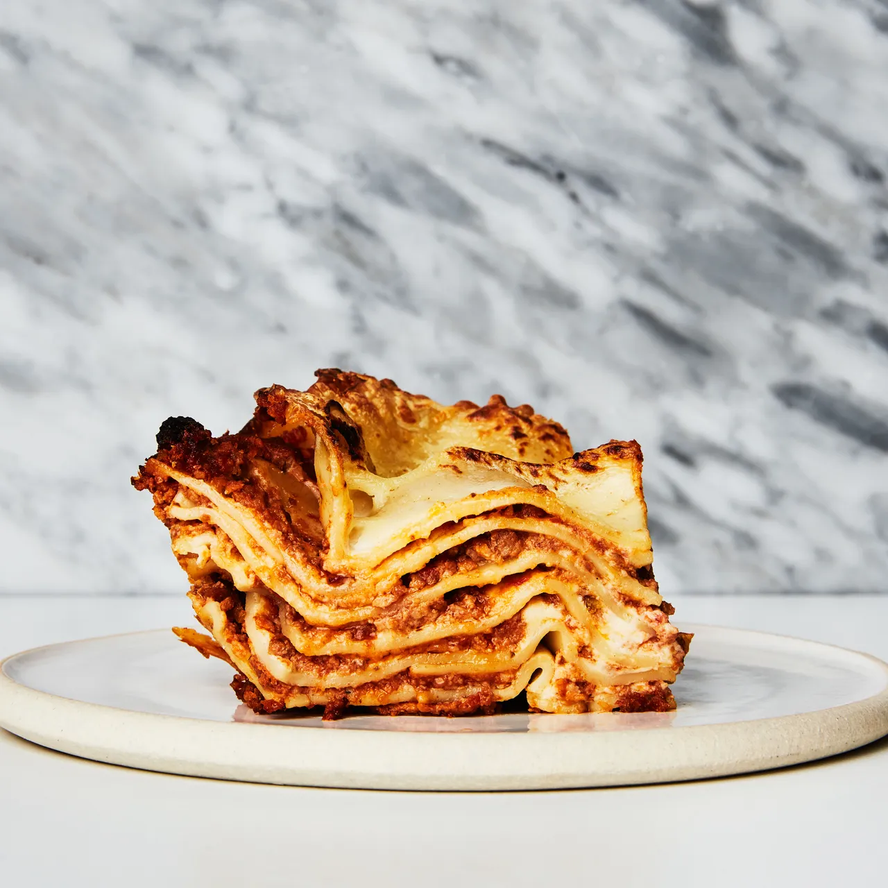

Lasagna

Description:
Lasagna is a type of Italian dish made with layers of flat pasta,
typically lasagna noodles, meat or vegetables, and a cheese and
tomato-based sauce. The dish is then baked in the oven until the cheese is
melted and bubbly. Traditional lasagna is made with meat sauce, but there
are also vegetarian versions that use vegetables such as spinach or
eggplant in place of meat. The dish can also be made with different types
of cheese, such as ricotta or mozzarella, and can be served with a variety
of side dishes, such as garlic bread or a green salad.Lasagna is a type of
Italian dish made with layers of flat pasta, typically lasagna noodles,
meat or vegetables, and a cheese and tomato-based sauce. The dish is then
baked in the oven until the cheese is melted and bubbly. Traditional
lasagna is made with meat sauce, but there are also vegetarian versions
that use vegetables such as spinach or eggplant in place of meat. The dish
can also be made with different types of cheese, such as ricotta or
mozzarella, and can be served with a variety of side dishes, such as
garlic bread or a green salad.
Ingredients:
- 1 pound ground beef
- 1 onion, diced
- 3 cloves of garlic, minced
- 1 (28 oz) can of crushed tomatoes
- 2 tablespoons tomato paste
- 1 teaspoon dried basil
- 1 teaspoon dried oregano
- Salt and pepper, to taste
- 1 (15 oz) container of ricotta cheese
- 1 egg
- 1/4 cup grated Parmesan cheese
- 1/4 cup chopped fresh parsley
- 12 lasagna noodles
- 4 cups shredded mozzarella cheese
Steps:
- Directions: Preheat the oven to 375°F (190°C).
-
In a large skillet, brown the ground beef over medium-high heat. Drain
the fat and set aside.
- In the same skillet, sauté the onion and garlic until softened.
-
Add the crushed tomatoes, tomato paste, basil, oregano, salt and
pepper.Bring to a simmer and let cook for 10 minutes.
-
In a separate bowl, mix the ricotta cheese, egg, Parmesan cheese, and
parsley together.
- Cook the lasagna noodles according to package instructions.
-
On a 9x13 inch baking dish, spread a thin layer of the meat sauce on the
bottom. Add a layer of noodles, then a layer of the ricotta mixture, and
a layer of mozzarella cheese. Repeat the layers, ending with a layer of
meat sauce and mozzarella cheese on top.
-
Cover the dish with foil and bake for 25 minutes. Remove the foil and
bake for an additional 25 minutes, or until the cheese is golden and
bubbly.
-
Let the lasagna rest for 10-15 minutes before cutting and serving.
Return to the top